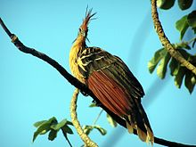

In zoology, a folivore is a herbivore that specializes in eating leaves. Mature leaves contain a high proportion of hard-to-digest cellulose, less energy than other types of foods, and often toxic compounds. For this reason, folivorous animals tend to have long digestive tracts and slow metabolisms
Folivorous langurs have cheek teeth with taller cusps and longer shearing blades than do hard-object-feeding mangabeys. Frugivores, and those with broad diets, are intermediate in occlusal relief and crest length.
The hoatzin is an example of a flighted, folivorous bird. Some bats are partially folivorous; their method of deriving nourishment from leaves, according to Lowry (1989), is to chew up the leaves, swallowing the sap and spitting out the remainder.